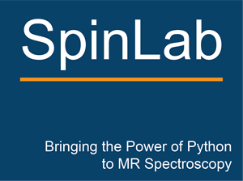

SpinLab

Overview
Why SpinLab?
Installation
Current Release
Reference
Modules
Functions
About
People
License
SpinLab
Importing Data And Basic Processing
View page source
Importing Data And Basic Processing
Load 1D NMR spectrum in TopSpin format
Load 1D NMR spectrum in TopSpin format